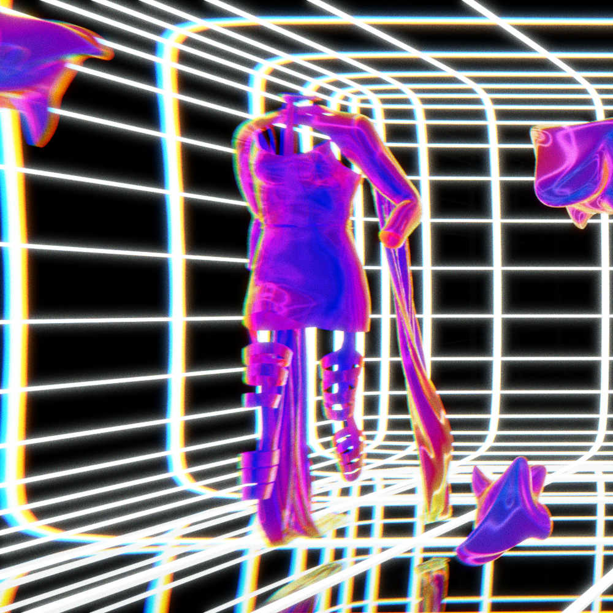
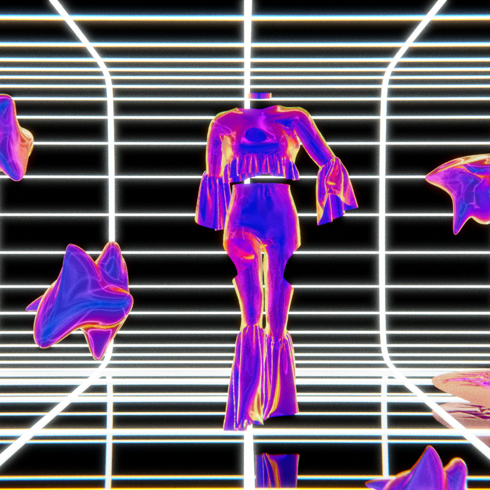
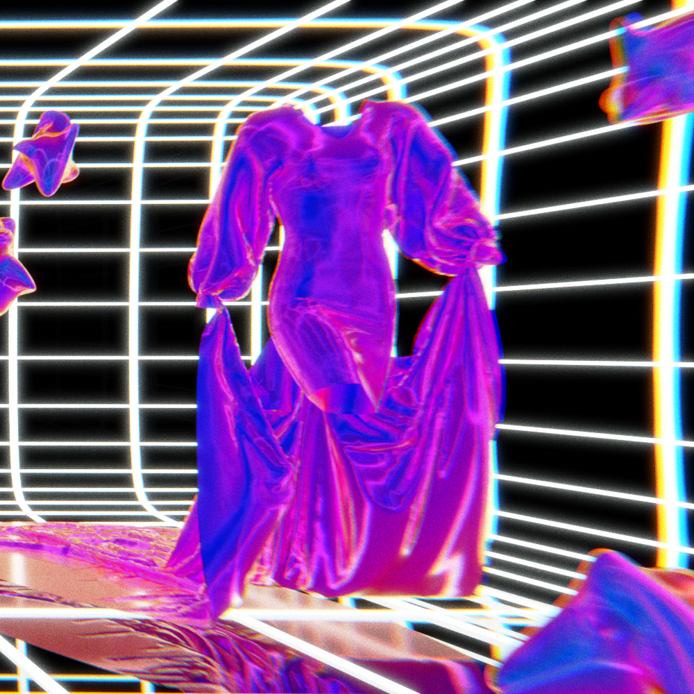

THE MODEL



"Et si l'avenir des defiles se jouait dans la 3D ?"
" Alors que la Fashion Week masculine prevue en juillet
est contrainte par la crise sanitaire de se reinventer, la question de la forme des defiles est sur toutes
les levres. Comment mettre en valeur des vetements a l'heure de la distanciation sociale ? Et attirer l'oeil
sur une plateforme digitale ? Faut-il les faire porter par une armee de mannequins qui se suivent au pas de
course ? Un debut de reponse semble se profiler grace a la marque congolaise "Hanifa". Sa creatrice, Anifa
Mvuemba,
a devoile le 22 mai sa nouvelle collection, Pink Label Congo, en direct sur Instagram, en organisant le premier
defile
de mode en 3D, sans podium, ni mannequin "
Le but de ce projet était de créer un défilé de mode en 3D, et profiter de tout les avantages que la CGI peut
nous offrir.
J'ai donc commencer à creer differentes pièces sur le logiciel marvelous designer ( spécialisé dans la
conception et simulation de tissus ),
certaines etait horribles, d'autres avait certain probleme de collisions, d'autre ne fonctionnaient pas du tout.
J'ai
donc continué a m'exercer sur marvelous designer en créant d'autres tenus, jusqu'à obtenir les resultats
voulus.
Après avoir pris en main le logiciel, j'ai telechargé une animation de marche simple depuis le site web
"Mixamo", et je l'ai importé sur Marvelous Designer.
J'ai ensuite créé mes robes et tenues, puis j'ai commencé la simulation combinées au animation de marche puis
j'ai importé le tout sur Blender.
Pour la partie photo, il m'a suffis de créer un cube et puis de le modifier afin qu'il apparaisse en vue
wireframe (C'est à dire pour qu'on ne vois uniquement les arêtes).
Ensuite j'ai positionner les robes de manière à ce qu'on puisse bien les voir et j'ai ajouté une texture
procédural qui joue avec les reliefs de chaque robes et les couleurs.
Pour le défilé en vidéo, je n'ai pas voulu faire la même chose. J'ai donc commencer par créer deux podium
différents ou pourrait defilé les robes. Je voulais une atmosphère
à la fois industriel mais aussi très "grunge", donc j'ai joué avec des textures de métal, d'usure mais également
de verre gelé.
J'ai donc créer un premier podium, assez simple : Un sol en béton usé, le plafond en verre laissant
transparaitre des neon blanc froid et des chaines permettant de soutenir le tout.
En ce qui concernent les tenues, je ne voulais pas créer quelque chose qui denoterais par apport au décor, j'ai
donc utilisé une texture assez simple de métal foncé aux tons bleuté pour chaque tenues,
hormis une seule : La dernière.
Pour celle ci la texture est la même, hormis qu'à la place d'etre en metal clair, elle est noire.
La derniere est celle présente tout à droite sur les photos de présentation, je voulais créer une robes avec une
traine relié aux manches afin de jouer un peu plus avec la fluidité du tissu.
La traine finalement me faisais beaucoup penser à une robe de marier, j'ai donc voulu que le deuxieme podium
fasse beaucoup plus grand, beaucoup plus ouvert. Pour cela, j'ai décider d'utiliser des
miroirs sur les mur afin de creer de la profondeur ( Une texture de miroir est créé en tournant la rugosité a 0
et l'aspect métallique a 1 ( les valeurs qui permettent de creer un textures varient
entre 0 et 1)). Après avoir créé les miroir, j'ai commencé le podium. Dans la meme ambiance que le premier, en
beton usé et en métal, mais en ajoutant cette fois une surélévation en verre glacé
incrusté de lumières blanches froides. J'ai ensuite ajouté des chaines en jouant avec les reflets des miroirs
afin de rajouter de la grandeur à la scène. Pour finir, j'ai créé une croix à
l'arrière du podium afin d'eclairer la robe par derrière, mais egalement faire une référence à la robe de
mariée.
La vidéo entière est sur Youtube, elle est assez courte mais on y vois quatre des robes : Lien ci-dessous !
» RETOUR HAUT DE PAGE
» VERS LES CAPSULES